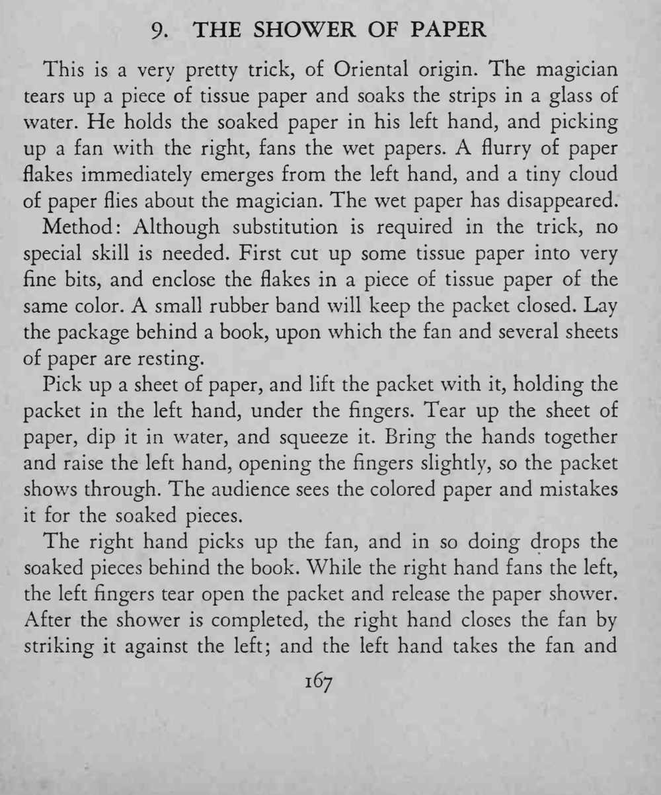
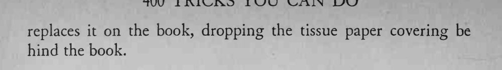

魔术师把湿纸团一扇，纸屑像雪花一样从手中飞散，湿纸团却不见了。
纸包颜色要和撕碎的纸一致，扇风时手要举高、动作要快。


This is a very pretty trick, of Oriental origin. The magician tears up a piece of tissue paper and soaks the strips in a glass of water. He holds the soaked paper in his left hand, and picking up a fan with the right, fans the wet papers. flurry of paper flakes immediately emerges from the left hand, and a tiny cloud of paper flies about the magician. The wet paper has disappeared. Method: Although substitution is required in the trick, no special skill is needed. First cut up some tissue paper into very fine bits, and enclose the flakes in a piece of tissue paper of the same color. A small rubber band will keep the packet closed. Lay the package behind a book, upon which the fan and several sheets of paper are resting. Pick up a sheet of paper, and lift the packet with it, holding the packet in the left hand, under the fingers. Tear up the sheet of paper, dip it in water, and squeeze it. Bring the hands together and raise the left hand, opening the fingers slightly, so the packet shows through. The audience sees the colored paper and mistakes it for the soaked pieces. The right hand picks up the fan, and in so doing drops the soaked pieces behind the book. While the right hand fans the left, the left fingers tear open the packet and release the paper shower. After the shower is completed, the right hand closes the fan by striking it against the left; and the left hand takes the fan and replaces it on the book, dropping the tissue paper covering be hind the book.